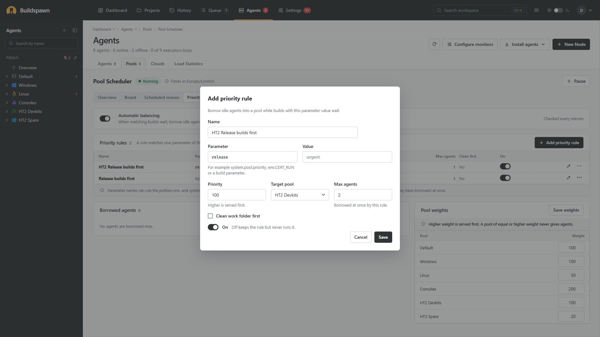
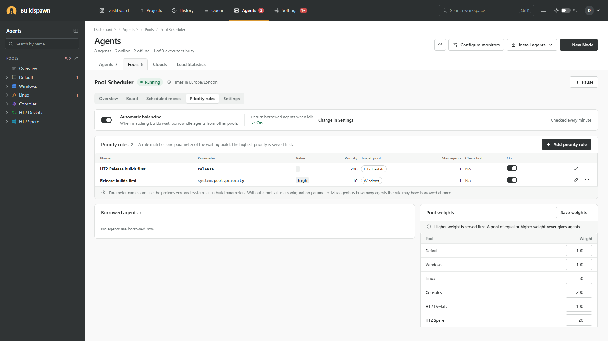
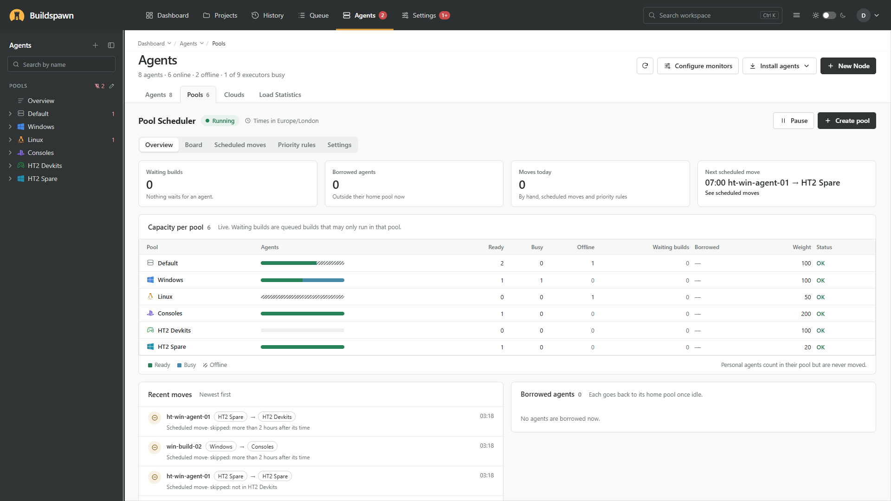

Give release builds priority on agents
When a release build waits, let Buildspawn borrow an idle agent from a less important pool and give it back afterwards.
Before you start
- You are an administrator.
- The release build configuration is in a pool, for example
HT2 Devkits. - The release build has a parameter that marks it as a release. Here it is a tick box named
release(a boolean parameter). See Parameters. - Decide which pools may lend agents. Only pools with a lower weight than the target pool lend.
Steps
- Open Agents, click the Pools tab, then Priority rules.
- Check that Automatic balancing is switched on.
- Under Pool weights, give the release pool a higher number than the pools that should lend to it, for example
HT2 Devkits100andHT2 Spare20. Click Save weights. - Click Add priority rule.
- In Name, type
HT2 Release builds first. - In Parameter, type
release. Leave Value empty: an empty value matchestrue,1,yesoron. - Set Priority (higher is served first) to
200, Target pool toHT2 Devkits, and Max agents (how many agents this rule may borrow at once) to1. - Click Save.


- Start a release build: open the build configuration, click Run with options, tick release, and run it.
Check it worked
- Within a minute, open the Overview tab of the Pool Scheduler. Borrowed agents counts 1, and Capacity per pool shows +1 in on the target pool and 1 out on the lending pool.
- Recent moves lists the move with Rule: HT2 Release builds first.
- The release build's page says it ran on the borrowed agent.
- When the agent is idle and no matching build waits, it goes back to its home pool. Its state in Borrowed agents reads Going back when idle until then.

Troubleshooting
| Problem | What to do |
|---|---|
| The build waits and nothing is borrowed. | No pool with a lower weight has an idle agent. Pools with equal or higher weight never lend. Busy, offline and personal agents, and agents on the Never move list, are never borrowed. |
| The rule doesn't match. | Check the parameter name. Without a prefix it is a configuration parameter; use env. or system. for those kinds. The value must match exactly, or be empty for a tick box. |
| Agents never go back. | Turn on Return borrowed agents when idle under Settings. Also check that the scheduler is not Paused. |
| Too many agents are borrowed. | Lower Max agents on the rule. |
Next steps
- Priority rules and weights: how balancing chooses agents.
- Move agents to another pool every evening.
- The Run dialog.